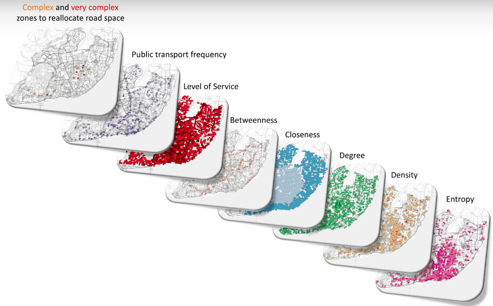
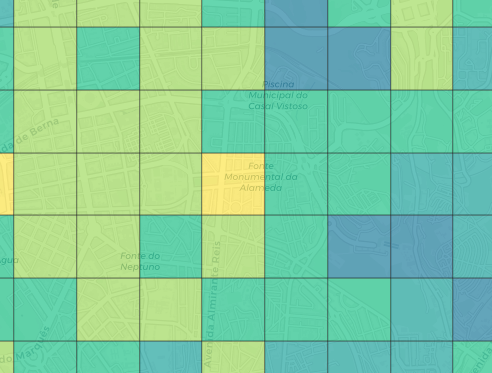
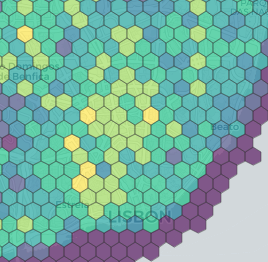
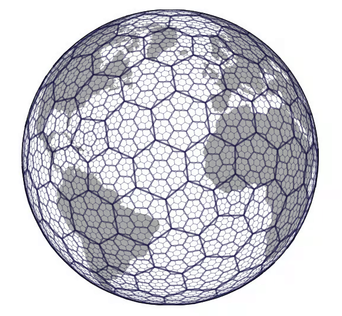
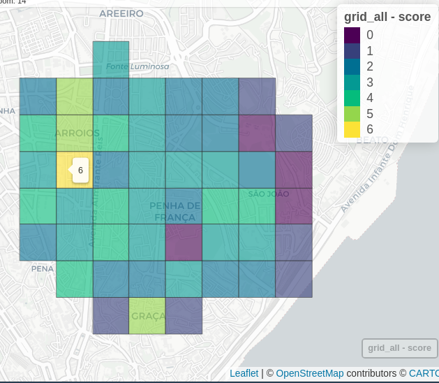
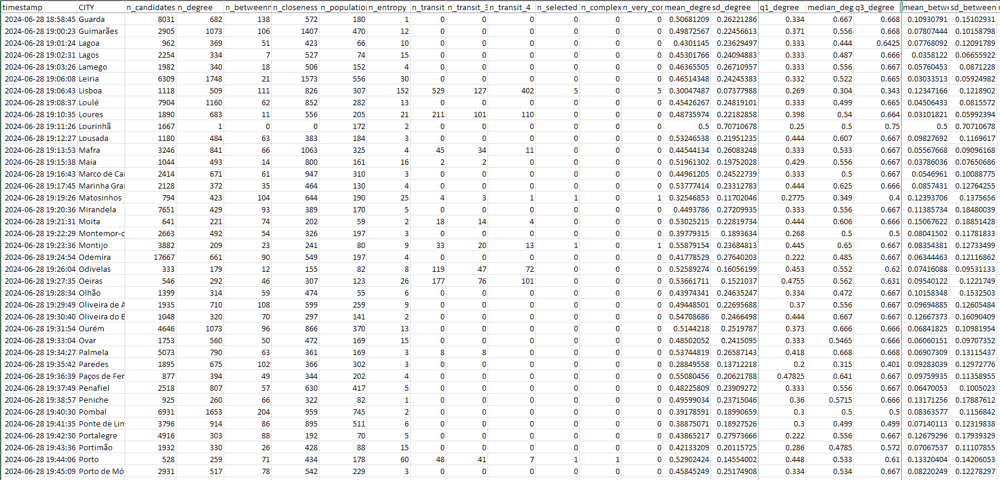

SiteSelection
An open-source tool to identify complex areas for street space reallocation
Rosa Félix, Gabriel Valença, Filipe Moura, Ana Morais de Sá
Complex areas
Space is limited, and there is competition 🚶♂️🚗🚲🚌🎍
Growing need for more sustainable, efficient, and equitable space distribution
Challenge of reallocating street space, dynamically over time
- Complexity of identifying areas where intervention makes sense (Valença, Moura, and Sá 2024)
Combination of several types of data
A process to select the cell locations that meet a set o criteria for a given city or neighbourhood where the street space is more disputed.
- Population density (census)
- POIs and activities
- Public Transit Frequency (GTFS for bus and tram)
- Road network centrality measures
- betweenness, closeness, and degree
Problem
Using point and click software to fetch and process data…
This is fine for a single case study 😀
But what it you want to replicate the exactly same process for 400 other locations? 🤯
SiteSelection
SiteSelection aims to identify complex areas suitable for street space reallocation.
GIS tools: methods to process existing geo-data and classify areas based on key metrics like road network centrality, population density, and public transport frequency.
Data Sources: open data such as OpenStreetMap road network and POIs, Census data, GTFS for public transport, administrative areas
Open-source tool: an R package 📦
Processes
Map
Returns a ranked list of complex areas based on their need for space reallocation (0 - no complexity, 6 - very complex)
Options
Thresholds for candidate selection
degree_min = mean # mean or median? default: mean
betweeness_range = 0.40 # percentile to exclude (upper and lower) default: 0.25
closeness_range = 0.25 # percentile to exclude (upper and lower) default: 0.25
population_min = median # mean or median? default: mean
entropy_min = 0.35 # value to exclude (lower) default: 0.5
freq_bus = c(4, 10, 20) # frequency of bus stops to define level of service For different contexts, we can have different cut thresholds… Under assessment
Options
Grid types
- Squares
- Hexagons
- Universal h3 hexagon grid - useful to include other variables



Options
Work with non-administrative boundary
- Set another polygon limit to the analysis
- create a
.geojsonfile with the area of interest

Options
Keep track of your analysis and export results
Live demo
Modify a network parameter
Modify the grid type or resolution
Other case study
Conclusions
- Repeated processes and analysis, human error proof 🛡️
- Super fast 🚀
- It would normally take days to run everything 😵
- ~1min for a city
- for 200 cities em Portugal < 45 min
Conclusions
- Change one parameter and re-run only what is needed
- Scalable and expandable, for other custom conditions and functions
- Replicable for other locations 🌎🌍🌏
- We included scripts to prepare data (census, GTFS)
- Open source 📡
Future developments and applications
Each function can standalone in the package
get_census()get_osm(),clean_osm()get_centrality()make_grid()get_transit()
- And be used for other purposes! out of the Streets4All scope
Thank you
More: u-shift.github.io/SiteSelection

contributions are welcome!
Rosa Félix - rosamfelix@tecnico.pt
About
This work is part of Streets4All Project, developed at the University of Lisbon and at the University of Coimbra, and funded by Fundação para a Ciência e Tecnologia (PTDC/ECI-TRA/3120/2021).
This work is part of the research activity carried out at Civil Engineering Research and Innovation for Sustainability (CERIS) and has been funded by Fundação para a Ciência e a Tecnologia (FCT), Portugal in the framework of project UIDB/04625/2020, project PTDC/ECI-TRA/3120/2021, and project 2022,07909,CEECIND/CP1713/CT0017.
The concept is based on:
22nd GET meeting, Alcobaça 2025
Valença, Gabriel, Filipe Moura, and Ana Morais de Sá. 2024. “Where Is It Complex to Reallocate Road Space?” Environment and Planning B: Urban Analytics and City Science 51 (6): 1290–1307. https://doi.org/10.1177/23998083231217770.